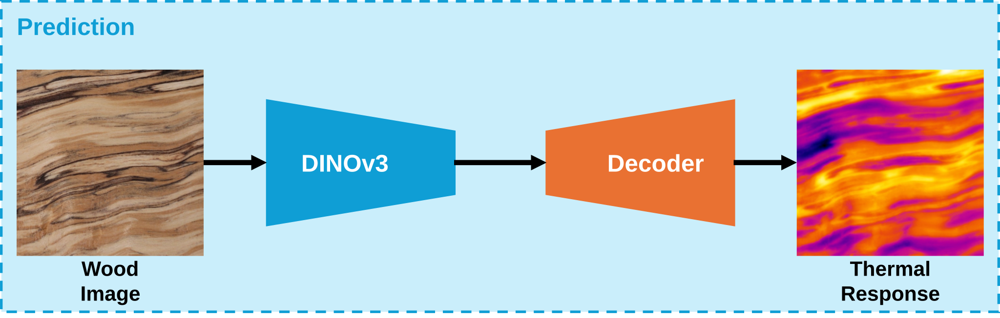
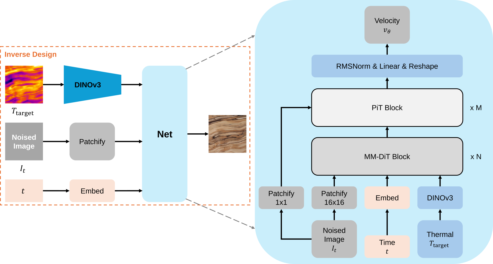

The thermal behavior of wood is a critical factor in advanced material assembly. However, pixel-level thermal analysis remains fundamentally constrained by the low resolution and noise inherent to infrared thermography. To address this, we introduce an end-to-end computational framework that synthesizes high-resolution thermal responses directly from standard RGB imagery. We first establish a core physical linkage: because spatial color variation in natural wood is driven by cellular anatomy, optical intensity serves as a reliable geometric proxy for the localized solid volume fraction. Through leveraging this theoretical insight, we develop an automated finite-element-method pipeline that maps pixel-level optical intensity to a 3D thermodynamic voxel grid, generating high-fidelity synthetic thermal responses. We find that 1) when the thermal conductivity along the thickness direction is uniform or linear, wood RGB images and their corresponding thermal responses exhibit extreme morphological similarities, and the lateral diffusion acts as a low-pass filter that smooths out high-frequency details; 2) when the thermal conductivity along the thickness direction is random, such morphological similarities are destroyed, and wood's 3D structure dominantly governs its thermal response.
Parametric ablation study of thermal diffusion. The top and middle rows display the original optical RGB image and the corresponding simulated steady-state surface temperature maps under various diffusion coefficients (α, β).

Wood internal heat transfer profiles mapping the temperature gradients from the bottom thermal boundary (50°C) to the top surface. The uniform and linear kz distributions (left and center columns) facilitate relatively continuous vertical heat conduction. In contrast, the randomly stratified distributions (right column) disrupt direct pathways, introducing tortuous thermal flow and non-linear temperature drops across the wood thickness.

We leverage this synthesized paired dataset to supervise a DINOv3-based encoder-decoder architecture, enabling direct prediction of the thermal responses from the RGB images.


Overview of flow matching for inverse wood design.
